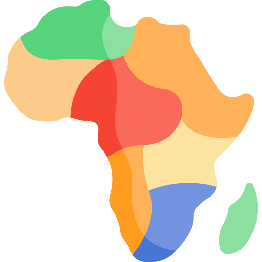

People
Peul, Fulɓe, Pël

EthniAfrica answers one question: where do Africa's names come from? The names of peoples, countries, languages, language families, family names and places; next, the names of customs and words. This is onomastics, combined with etymology. For each name, the site shows the name a people gives itself and the names others gave it, side by side, with every source and its type. Free, open source, built for the phone.
Who named whom, when, and why? Every name keeps the trace of an encounter between peoples.
There is no unified digital source for searching Africa's history through its names. People make do with Wikipedia and search engines, language catalogues, name-meaning sites with no sources, DNA tests or the media. Nothing brings it all together, or shows the links between peoples.
Above all, Africa is seen within its national borders: borders mostly drawn less than 140 years ago, independences barely more than 60 years old. The history before them is rarely taught: people have to find it for themselves.
The social accounts launched in early September 2026. The figures below date from 8 October 2026.
Add TikTok (98,200 views in 28 days, 666 followers) and YouTube (15,900 views in 28 days, 169 subscribers). On the site, 391 unique visitors in 30 days, counted only when they accept audience measurement: a floor, not a total. In the last week measured, search engines and ChatGPT brought 48 of 81 visitors: the site's answers are already being found through search and AI assistants.
EthniAfrica is an independent project incubated by the Big Emotion agency, carried today by one person, supported by a few part-time volunteers. We are looking for patrons, grants and institutional or cultural partners to turn it into a team.
| A full-time developer based in West Africa | €15,000 |
| 200 sourced and verified records, paid per deliverable, by region: one people and its neighbours | €9,000 |
| A six-week field trip to Dakar, Abidjan and Accra (estimate, to be confirmed with quotes) | €10,000 |
| Production tools for two people, hosting and domains | €7,600 |
| 30 oral accounts collected with their carriers' consent, transcribed and documented | €2,400 |
| Expense allowance for social media moderation | €1,800 |
| Contingency (15%) | €6,900 |
| Total | €52,700 |
The team we aim for. Paid: a developer. Expenses covered: social media moderation. Trained volunteers: checking sources and data on the site, research for publications. Payment goes to verified deliverables, not to hours.
The project stays free and open, carries no advertising, and rules out any partnership with ancestry DNA services.